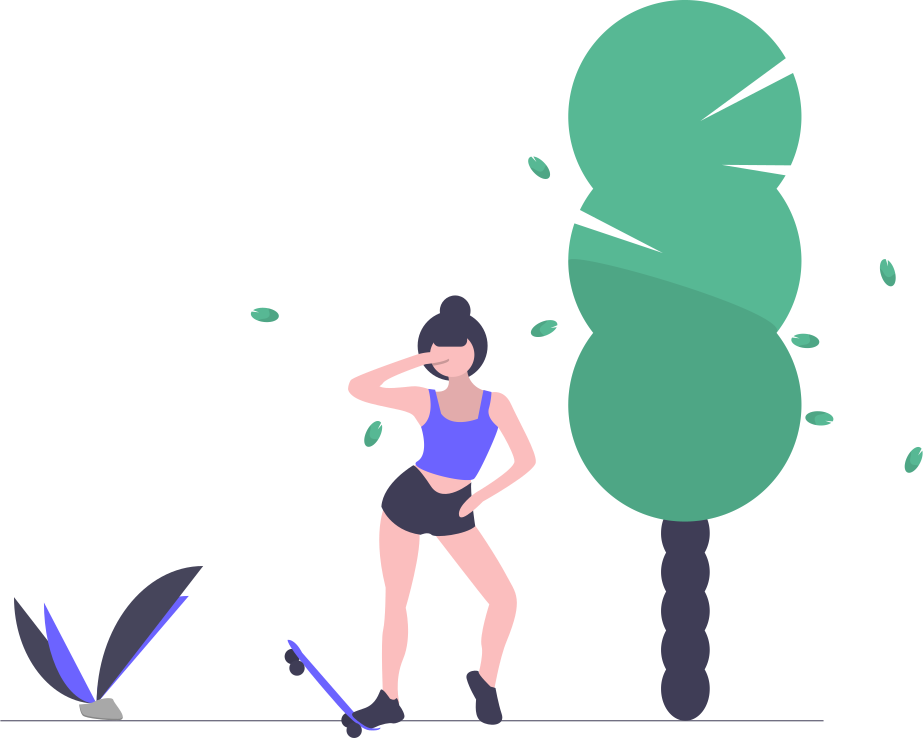

Sobre
Somos apaixonados por skateboarding! Oferecemos as melhores peças e equipamentos para ajudar você a alcançar seus objetivos no skate.
Produtos
Confira nossa variedade de shapes, rodas, rolamentos e muito mais. Tudo para personalizar seu skate!
Benefícios
Preços acessíveis, suporte especializado e entrega rápida. Nossa missão é garantir sua satisfação.
Loja
Visite nossa loja física ou explore nossos produtos online para encontrar tudo o que você precisa.
Em construção...Blog
Leia dicas, histórias de skatistas e as últimas novidades do mundo do skateboarding.
Em construção...